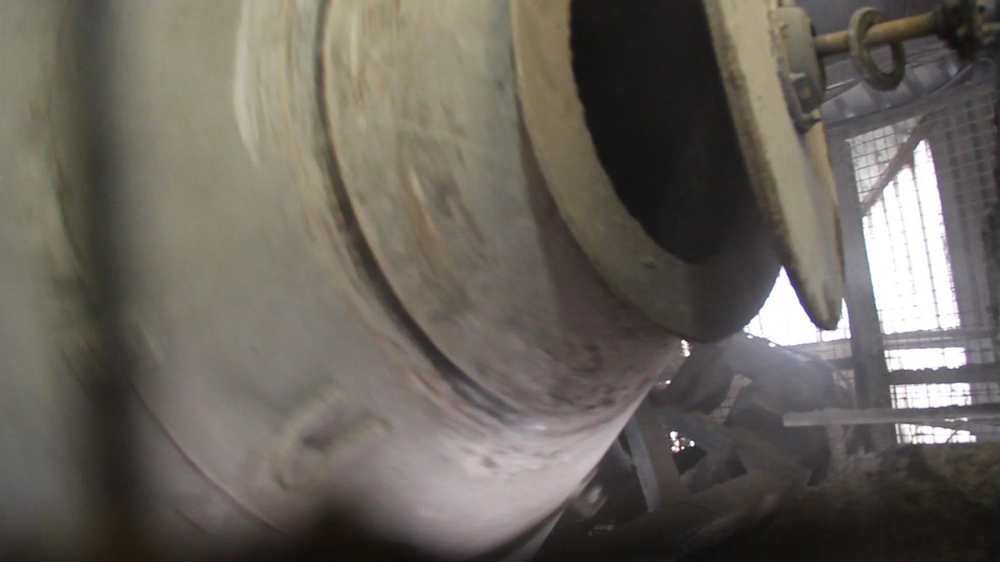

Waste/Ash/Concrete
This project is work-in-progress, a film and sculptural installation currently being developed at Chisenhale Studios. The piece traces the relationship between waste, ash from incineration and concrete- collecting stories and visiting landscapes associated with the production and transport of these materials. For more info/photos on project see here

Concrete plant, Bow
Belvedere Incinerator, Bexley